Meilleur brunch à Paris : 12 adresses en 2026
Douze maisons, douze façons de passer la matinée à table. Adresses, jours de service et tarifs relevés un par un, parce que les listes de brunch qui circulent en recopient beaucoup, et en vérifient peu.

Le brunch parisien n'est plus un copier-coller du modèle anglo-saxon. Il s'est approprié les saveurs de Jérusalem, la boulangerie de quartier, la cuisine japonaise du samedi matin et le végétal assumé. Voici douze adresses qui le montrent, avec pour chacune ce qu'elle sert, quand elle le sert, et ce qu'il faut prévoir.
En brefCe qu'il faut retenir
- Trois adresses servent tous les jours, pas seulement le week-end : Holybelly, Kafkaf et Kozy Kanopé. C'est le meilleur moyen d'éviter la file.
- Trois des cinq tarifs vérifiés sont à 39 € ou moins : le brunch parisien coûte moins cher que sa réputation ne le dit.
- Trois maisons sont végétariennes ou essentiellement végétales : Maslow, Tekés et Ima Cantine. Ce n'est plus une niche.
- Une adresse très citée a fermé : L'Entente, rue Monsigny, annonce sa fermeture définitive. Elle figure pourtant encore dans la plupart des sélections en ligne.
Comment nous avons choisi
Cette sélection part des adresses qui reviennent le plus souvent dans les guides et la presse spécialisée, puis elle les passe au crible d'une vérification simple et fastidieuse : l'adresse existe-t-elle, l'établissement est-il ouvert, le brunch est-il servi, et quel jour. Cela paraît élémentaire. Ce ne l'est pas : parmi les adresses les plus citées, l'une avait tout simplement fermé, et beaucoup de fiches en ligne se recopient les unes les autres sans jamais revenir à la source.
Les critères éditoriaux sont ensuite ceux de notre grille : la qualité de ce qui est servi, le produit et son origine, le service, le cadre, et le rapport entre ce qu'on paie et ce qu'on reçoit. Nous avons privilégié la diversité des registres plutôt qu'un classement du meilleur au moins bon : un buffet à volonté et un salon de thé anglais ne se comparent pas, ils se choisissent selon l'envie du jour.
Aucune de ces douze maisons n'a encore été visitée par la rédaction. Ce guide vérifie des faits, il ne raconte pas un repas : vous n'y lirez pas de note de dégustation, et les notes sur 20 de notre grille viendront avec nos visites. Les tarifs relevés auprès des maisons sont signalés ligne par ligne ; les autres sont donnés comme ordres de grandeur, et restent à confirmer avant de réserver.
Les 12 adresses
-
01
Holybelly 5
Paris 10e · Américain, sans réservation
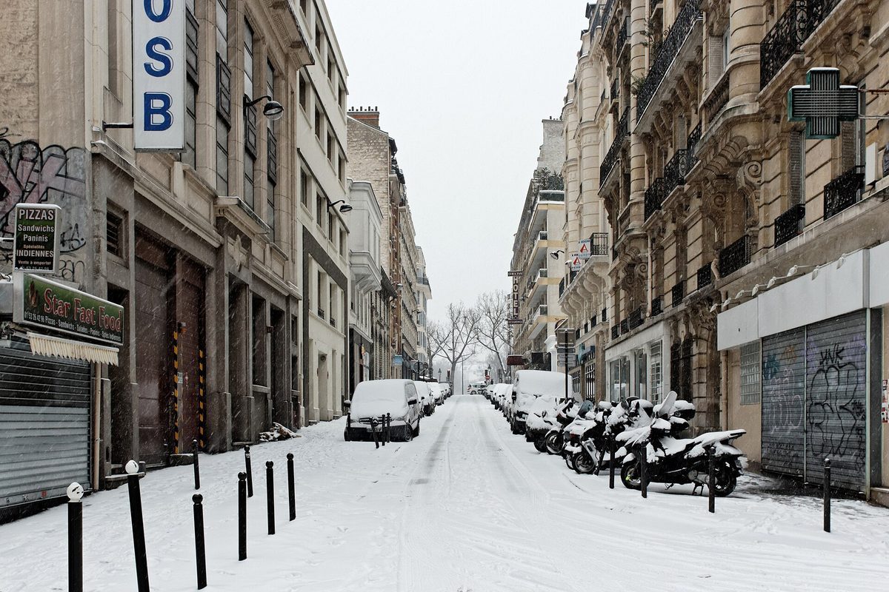
La rue Lucien-Sampaix, où Holybelly a ouvert sa deuxième adresse. Photo Coyau, CC BY-SA 3.0, via Wikimedia Commons. Holybelly, c'est l'adresse qui a lancé la vague des pancakes sérieux à Paris. Le premier comptoir a ouvert rue Lucien-Sampaix en 2013 ; le second, au numéro 5, a suivi à l'été 2017 et sert aujourd'hui une centaine de couverts. Murs clairs, tables en bois brut, comptoir ouvert : l'endroit respire l'authenticité sans pédanterie.
Les pancakes sont épais, moelleux, servis avec du sirop d'érable et du beurre. On aime la générosité des portions, la qualité des œufs, les jus pressés sur place. Ce qui déçoit parfois : l'attente le week-end peut être longue, et le service, bien que bienveillant, n'est pas toujours fluide en plein rush.
Pour qui ? Les amateurs de brunch sans prise de tête, les couples, les petits groupes.
- Adresse5 rue Lucien-Sampaix, Paris 10e
- ServiceTous les jours, 9 h à 17 h, dernière commande à 16 h
- RéservationNon, file d'attente
- BudgetOrdre de grandeur : 15 à 25 €
Ce qu'on y vient chercher : Les pancakes, évidemment, et les œufs brouillés avec leurs accompagnements à la carte.
-
02
Maslow
Paris 3e · Végétarien, brunch le dimanche
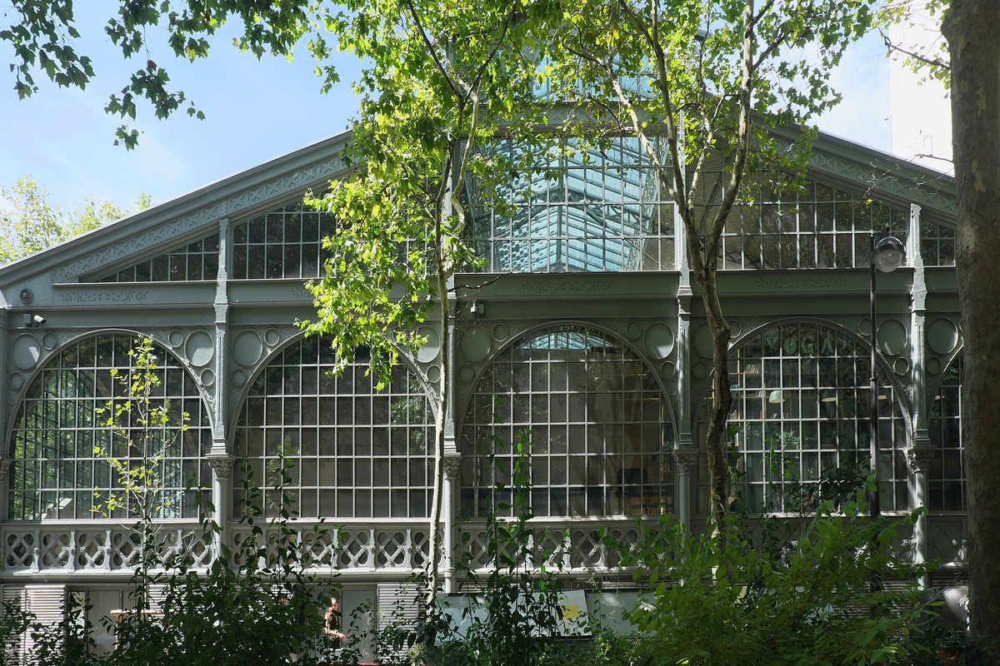
La rue de Picardie, le long du Carreau du Temple. Photo GFreihalter, CC BY-SA 4.0, via Wikimedia Commons. Maslow a compris que les Parisiens veulent de la qualité sans se ruiner. La maison de la rue de Picardie, face au Carreau du Temple, joue la carte de la modernité : matériaux nobles, lumière généreuse, salle ouverte.
Un point que les listes de brunch oublient presque toujours : la carte est intégralement végétarienne. Ce n'est pas une option de repli, c'est le projet de la maison, et le brunch du dimanche décline le sucré et le salé sur ce seul registre. On aime le rapport qualité prix, la sélection de pains, le café. Ce qui déçoit parfois : un brunch un peu formaté, qui manque de signature.
Pour qui ? Les familles, les groupes, et tous ceux qui veulent un brunch végétarien qui ne se vit pas comme une privation.
- Adresse32 rue de Picardie, Paris 3e
- ServiceBrunch le dimanche, 11 h 30 à 21 h
- RéservationRecommandée
- BudgetOrdre de grandeur : 30 à 40 €
Ce qu'on y vient chercher : Le format à partager, et une cuisine végétale qui tient le repas entier.
-
03
Boubalé
Paris 4e · Ashkénaze, hôtel Le Grand Mazarin
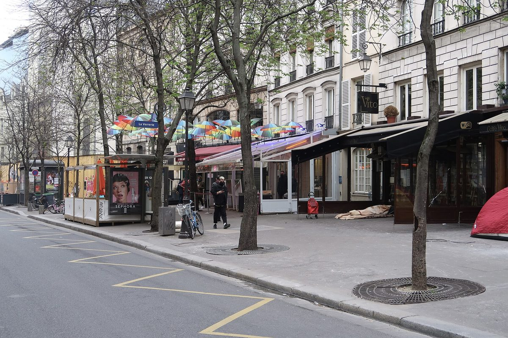
La rue des Archives, où Le Grand Mazarin abrite Boubalé. Photo Polymagou, CC BY-SA 4.0, via Wikimedia Commons. Boubalé, c'est la fête à chaque assiette. La table du Grand Mazarin, au cœur du Marais, est signée Assaf Granit, chef étoilé qui y relit la cuisine ashkénaze plutôt que levantine, avec des détours orientaux. Le décor mêle un glamour assumé et un jardin d'hiver apaisant.
Le brunch du dimanche prend la forme d'un buffet sucré et salé. On aime l'authenticité des recettes, la générosité des portions, l'ambiance conviviale et bruyante, dans le bon sens. Ce qui déçoit parfois : le service peut ralentir en plein service.
Pour qui ? Les groupes d'amis, les familles, et les curieux d'une cuisine juive d'Europe centrale rarement servie à ce niveau à Paris.
- Adresse6 rue des Archives, Paris 4e
- ServiceBrunch le dimanche, 12 h à 15 h
- RéservationFortement recommandée
- Tarif62 € par adulte, 36 € de 5 à 12 ans, gratuit avant 5 ans
- RelevéTarifs publiés par la maison
Ce qu'on y vient chercher : Le buffet du dimanche, et la babka au chocolat qui a fait la réputation de la maison.
-
04
B.O.U.L.O.M.
Paris 18e · Buffet à volonté, boulangerie
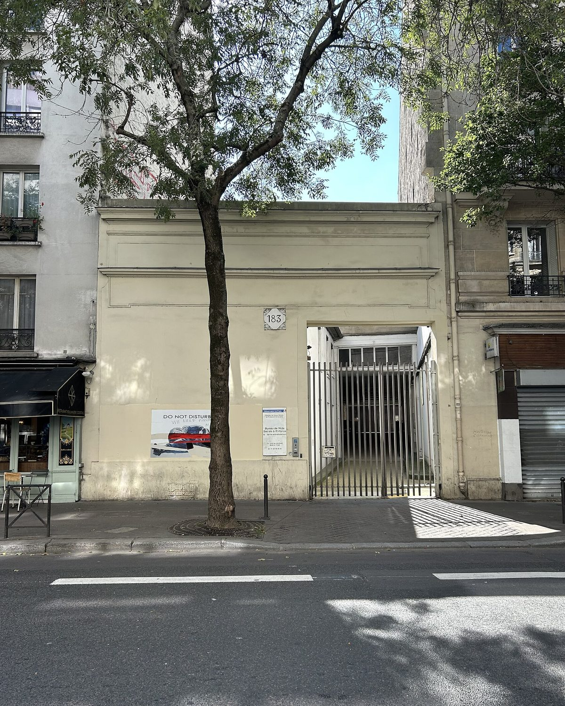
La rue Ordener, à quelques numéros de la boulangerie. Photo Polymagou, CC BY-SA 4.0, via Wikimedia Commons. B.O.U.L.O.M., pour « Boulangerie Où L'On Mange », est le brunch de ceux qui veulent en avoir pour leur argent. Derrière une devanture de boulangerie artisanale, Julien Duboué a installé en février 2018 un vaste restaurant-loft et un buffet à volonté.
Charcuteries, fromages, pains au levain et viennoiseries faits sur place à partir de blés anciens bio, pâtisseries, fruits, et un coin chaud. On aime la variété impressionnante et la qualité des produits, avec des recettes du Sud-Ouest qui reviennent souvent. Ce qui déçoit parfois : le buffet peut devenir chaotique en fin de service.
Pour qui ? Les gros appétits, les familles nombreuses, les groupes d'amis.
- Adresse181 rue Ordener, Paris 18e
- ServiceBrunch le week-end
- RéservationRecommandée
- Tarif39 € par adulte le soir et le week-end, 29 € le midi en semaine
- RelevéTarifs publiés par la maison
Ce qu'on y vient chercher : Le buffet, et surtout les pains au levain, qui justifient à eux seuls le déplacement.
-
05
Tekés
Paris 2e · Végétal, cuisson au feu
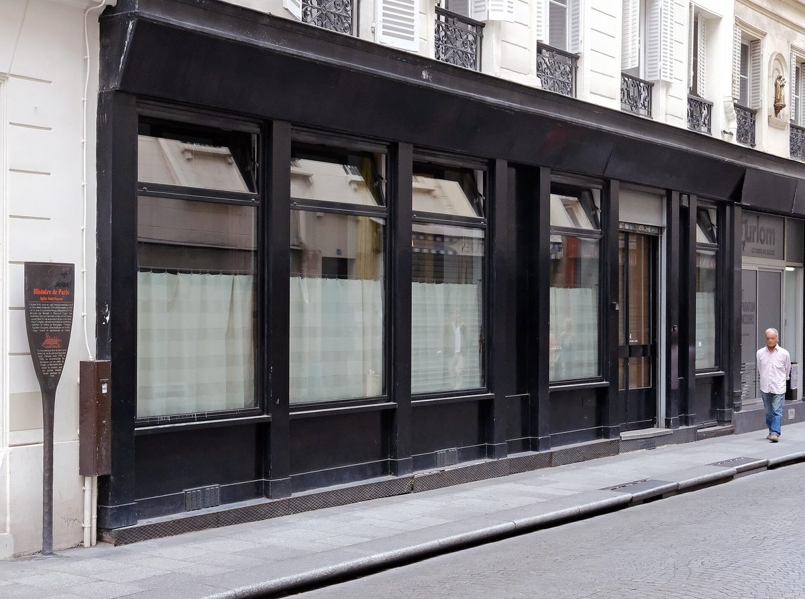
La rue Saint-Sauveur, où Tekés est installé. Photo Mbzt, CC BY-SA 4.0, via Wikimedia Commons. Tekés, « cérémonie » en hébreu, est l'autre maison parisienne d'Assaf Granit. Elle rend hommage aux traditions de Jérusalem avec un parti pris net : la carte est essentiellement végétale, et les légumes passent au feu ouvert, en cuisine à vue.
Poireaux grillés à la flamme et purée de pomme de terre à la feta, fattoush au labneh et zaatar, gnocchis frits au curry jaune : les plats se partagent. On aime la qualité des épices et l'intensité des cuissons. Ce qui déçoit parfois : le service peut sembler distant, et la salle manque un peu de chaleur.
Pour qui ? Les amateurs de cuisine méditerranéenne, les couples, les petits groupes.
- Adresse4 bis rue Saint-Sauveur, Paris 2e
- ServiceBrunch le dimanche
- RéservationObligatoire
- Tarif60 € par personne
- RelevéTarif publié par la maison
Ce qu'on y vient chercher : La shakshuka, le houmous, et la babka au chocolat en fin de repas.
-
06
Rose Bakery
Paris 9e · Anglo-français, depuis 2002
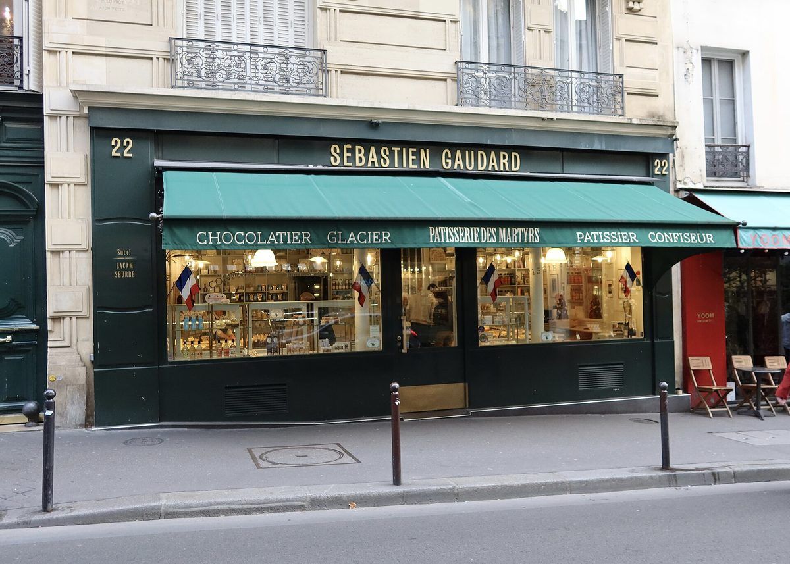
La rue des Martyrs, où Rose Bakery a ouvert en 2002. Photo Polymagou, CC BY-SA 4.0, via Wikimedia Commons. Pour la case britannique, une maison plutôt qu'une autre : Rose et Jean-Charles Carrarini ont ouvert rue des Martyrs, en 2002, le salon de thé qui a introduit à Paris le brunch anglo tel qu'on le connaît aujourd'hui. Vingt-quatre ans plus tard, la formule n'a pas bougé, et c'est tant mieux.
Buffet de légumes, salades, soupes, quiches, omelettes, et une vitrine de pâtisseries qui fait l'essentiel de la réputation : carrot cake, cheesecake, scones, brownies, muffins. On aime la constance et la fraîcheur. Ce qui déçoit parfois : la salle est petite, l'attente réelle, et le décor volontairement spartiate ne plaira pas à tout le monde.
Pour qui ? Les anglophiles, les amateurs de pâtisserie anglaise, ceux qui préfèrent le petit-déjeuner tardif au buffet pantagruélique.
- Adresse46 rue des Martyrs, Paris 9e
- ServicePetit-déjeuner et déjeuner, brunch le week-end
- RéservationNon
- BudgetOrdre de grandeur : 25 à 35 €
- Téléphone01 42 82 12 80
Ce qu'on y vient chercher : Le carrot cake, et l'assiette de légumes du buffet, qui change tous les jours.
-
07
Kafkaf
Paris 11e · Méditerranéen, brunch tous les jours
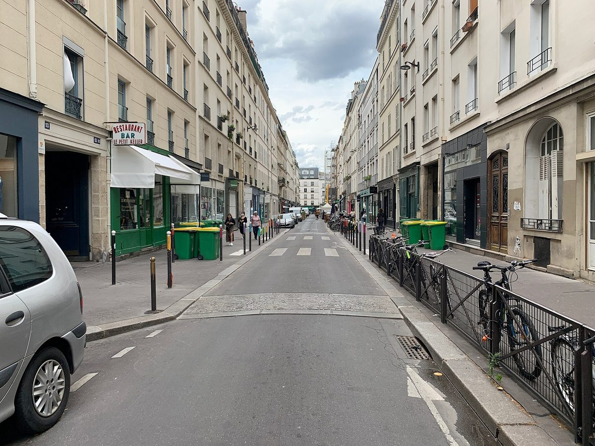
La rue Keller, où Kafkaf sert un brunch toute la journée. Photo Chabe01, CC BY-SA 4.0, via Wikimedia Commons. Kafkaf a compris que l'ambiance fait la moitié du plaisir. La salle de la rue Keller, décor méditerranéen travaillé, rappelle la convivialité d'un riad, et le brunch y est servi tous les jours, pas seulement le week-end. C'est rare, et c'est précieux quand on veut bruncher un mardi.
Pancakes moelleux, granola bowl, avocado toast, egg burger, œufs bénédicte : la carte est celle du brunch contemporain, exécutée avec des produits frais et des portions généreuses. On aime l'accueil et la souplesse des horaires. Ce qui déçoit parfois : le service ralentit aux heures de pointe.
Pour qui ? Les familles, les couples, et ceux qui veulent bruncher en semaine.
- Adresse7 rue Keller, Paris 11e
- ServiceTous les jours, 9 h à 17 h
- RéservationNon nécessaire
- Budget20 à 30 € par personne, formules enfants autour de 14 €
- Téléphone09 71 07 94 36
Ce qu'on y vient chercher : Les pancakes, et le fait de pouvoir s'installer un jeudi à 15 h.
-
08
Kozy Kanopé
Paris 9e · All-day brunch, café de spécialité
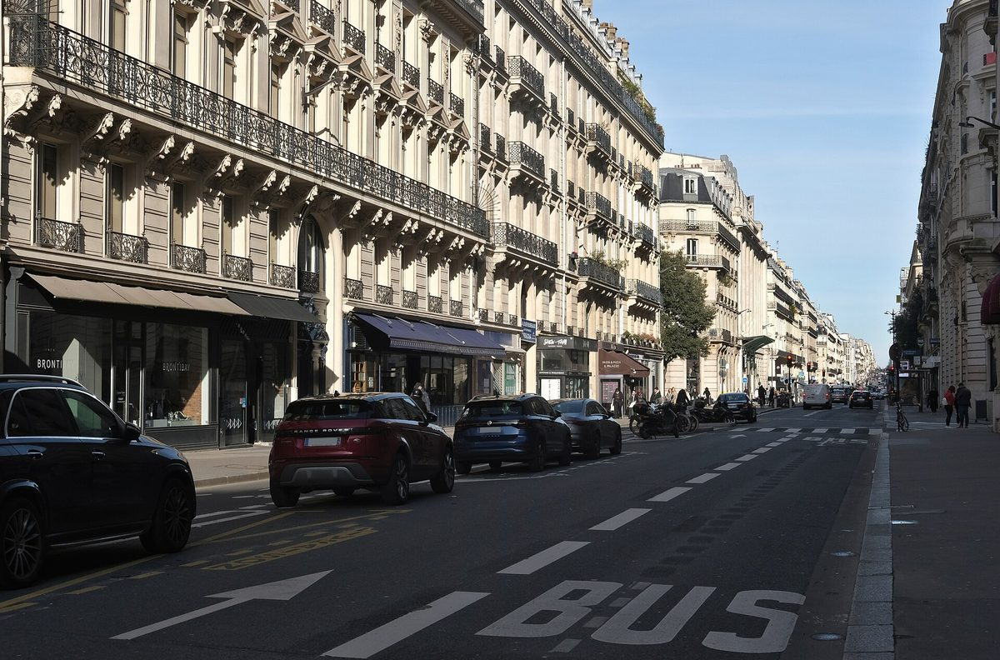
La rue La Fayette, où Kozy occupe deux niveaux. Photo Mbzt, CC BY 4.0, via Wikimedia Commons. Kozy est une petite chaîne parisienne, et Kanopé en est l'adresse du 9e, à deux pas des Galeries Lafayette. Le rez-de-chaussée est baigné de lumière par une verrière, avec une déco industrielle soignée ; l'étage est plus chaleureux, coloré et végétalisé.
Le brunch est servi toute la journée, tous les jours : pancakes salés et sucrés, avocado toasts, œufs bénédicte, granola bowls, dans un registre plutôt végétarien. On aime l'accessibilité, la qualité du café, l'ambiance jeune. Ce qui déçoit parfois : le manque de sophistication culinaire, un brunch un peu attendu.
Pour qui ? Les petits budgets, les jeunes actifs, les couples.
- Adresse46 rue La Fayette, Paris 9e
- ServiceTous les jours, brunch servi toute la journée
- RéservationNon nécessaire
- Tarif23 € la formule brunch
- RelevéTarif publié par la maison
Ce qu'on y vient chercher : La formule complète à 23 €, et une table libre un jour de semaine.
-
09
Nilo Coffee & Brunch
Paris 11e · Café coréen, croffles
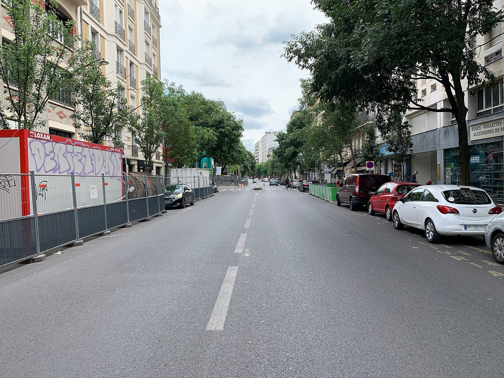
L'avenue Parmentier, où Nilo est installé. Photo Chabe01, CC BY-SA 4.0, via Wikimedia Commons. Nilo est le brunch des amateurs de bon café qui ne veulent pas sacrifier l'assiette. La salle de l'avenue Parmentier, murs blancs et bois clair, tient de l'épure scandinave, mais la cuisine est coréenne d'inspiration.
La spécialité maison est le croffle, croisement du croissant et de la gaufre, décliné en sucré et en salé, accompagné de mocktails à base de café. On aime le café, l'originalité de la proposition, le calme de la salle. Ce qui déçoit parfois : le service peut être lent, et les portions ne sont pas toujours généreuses.
Pour qui ? Les amateurs de café de spécialité, ceux qui travaillent en terrasse, les couples.
- Adresse73 avenue Parmentier, Paris 11e
- ServiceMardi au vendredi 8 h à 19 h, samedi et dimanche 9 h à 18 h
- RéservationNon nécessaire
- BudgetOrdre de grandeur : 18 à 28 €
Ce qu'on y vient chercher : Le croffle salé, et un café qui a vraiment du caractère.
-
10
Brach Paris
Paris 16e · Méditerranéen, hôtel signé Starck
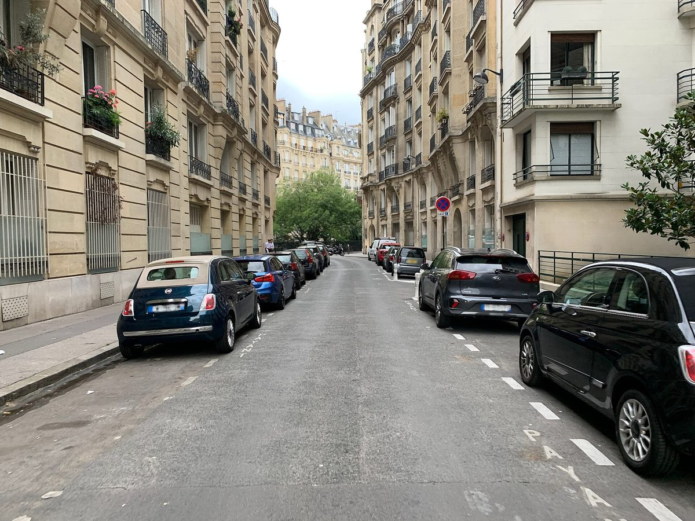
La rue Jean-Richepin, où Brach occupe un ancien centre de tri postal. Photo Chabe01, CC BY-SA 4.0, via Wikimedia Commons. Brach, c'est le brunch de ceux qui veulent du luxe sans pédanterie. L'hôtel occupe un ancien centre de tri postal de 7 000 m² entièrement repensé par Philippe Starck, avec un potager sur le toit, et la cuisine méditerranéenne est signée Adam Bentalha.
Le brunch prend la forme d'un buffet : charcuteries, fromages, pains, pâtisseries, fruits, et un coin chaud. On aime la qualité des produits et une ambiance luxueuse qui reste accueillante. Ce qui déçoit parfois : le prix, et un buffet qui manque de guidage.
Pour qui ? Les occasions spéciales, les amateurs de décor, les couples.
- Adresse1-7 rue Jean-Richepin, Paris 16e
- ServiceBrunch le dimanche
- RéservationObligatoire
- TarifNon relevé sur le site officiel, à confirmer auprès de la maison
Ce qu'on y vient chercher : Le décor de Starck, et la sélection de poissons fumés du buffet.
-
11
Mokochaya
Paris 11e · Japonais, brunch le samedi
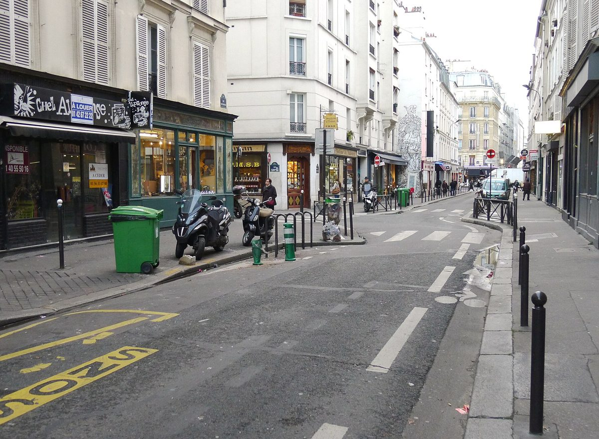
La rue Saint-Bernard, où l'équipe de Mokonuts tient Mokochaya. Photo Mbzt, CC BY-SA 4.0, via Wikimedia Commons. Mokochaya est le brunch de ceux qui veulent sortir des sentiers battus. C'est la cantine japonaise de l'équipe de Mokonuts, rue Saint-Bernard : salle épurée, bois naturel, comptoir, une atmosphère sereine du matin au goûter.
Le samedi, l'adresse devient un spot à brunch japonais : curry, bentos, jus de poire maison, café asiatique, cookies. On aime l'originalité, la qualité des produits, le calme. Ce qui déçoit parfois : le format peut dérouter qui attend des pancakes, et les portions ne sont pas pantagruéliques.
Pour qui ? Les amateurs de cuisine japonaise, les couples, les curieux.
- Adresse11 rue Saint-Bernard, Paris 11e
- ServiceBrunch le samedi, 11 h à 15 h 30. Fermé dimanche et lundi
- RéservationRecommandée
- Tarif23 € le brunch du samedi
- RelevéTarif publié par la maison
Ce qu'on y vient chercher : Le curry du samedi, le jus de poire maison, et les cookies de Mokonuts.
-
12
Ima Cantine
Paris 10e · Végétarien, canal Saint-Martin
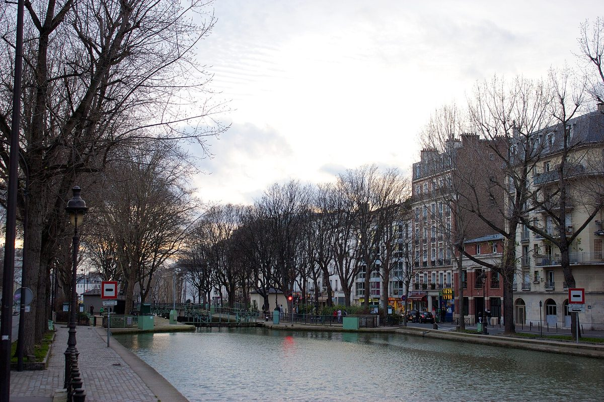
Le quai de Valmy, face au canal Saint-Martin, où Ima est installé. Photo Alexander Baxevanis from London, UK, CC BY 2.0, via Wikimedia Commons. Ima Cantine sert depuis septembre 2016 une cuisine végétarienne d'inspiration méditerranéenne, face au canal Saint-Martin. Carreaux rouges et briques apparentes donnent une atmosphère rustique et moderne à la fois.
Le service commence dès 9 h, avec le café de Ten Belles et des pâtisseries dont plusieurs vegan. La carte est généreuse, saisonnière, préparée avec des produits frais. On aime l'engagement, la qualité, l'ambiance inclusive. Ce qui déçoit parfois : c'est léger pour les gros appétits, et l'absence de réservation complique le week-end.
Pour qui ? Les végétariens, les amateurs de cuisine saine, ceux qui veulent une table au bord de l'eau.
- Adresse39 quai de Valmy, Paris 10e
- ServiceÀ partir de 9 h
- RéservationNon, la maison n'en prend pas
- BudgetOrdre de grandeur : 22 à 30 €
Ce qu'on y vient chercher : Le café de Ten Belles, les pâtisseries vegan, et une table côté canal.
Notre verdict
Le premier enseignement est géographique. Le brunch parisien s'est déplacé vers l'est et le nord : sur ces douze adresses, sept sont dans les 9e, 10e, 11e et 18e arrondissements. Le 16e n'est représenté que par un hôtel.
Le deuxième est culinaire. La cuisine anglo-saxonne, qui a fondé le genre, ne domine plus. Deux maisons de cette liste relèvent de la cuisine de Jérusalem, une de la cuisine japonaise, une de la cuisine coréenne, trois du végétal assumé. Rose Bakery, qui a introduit le brunch anglais à Paris en 2002, fait aujourd'hui figure de classique plutôt que de modèle.
Le troisième est économique. Sur les cinq tarifs que nous avons pu confirmer auprès des maisons, trois sont à 39 € ou moins, et deux dépassent 60 €. L'écart tient moins à la qualité qu'au format : un buffet de palace et une formule de coffee shop ne vendent pas la même chose.
Reste un point qui n'a rien d'anecdotique. En vérifiant ces douze adresses une par une, nous avons trouvé une maison fermée qui figure encore dans la plupart des sélections en ligne, et un grand nombre de fiches donnant des rues, des arrondissements ou des jours de service inexacts. C'est la raison d'être de ce guide : il vaut mieux douze adresses vérifiées que cinquante recopiées.
Questions fréquentes
Quel est le meilleur brunch à Paris en 2026 ?
Cela dépend de ce que vous cherchez. Pour l'authenticité américaine, Holybelly reste la référence, et sert tous les jours. Pour un buffet copieux, B.O.U.L.O.M. à 39 € le week-end offre le meilleur rapport quantité prix de cette sélection. Pour un brunch de table, Boubalé et Tekés, les deux maisons parisiennes d'Assaf Granit, servent le dimanche à 62 € et 60 €. Pour un budget serré, Kozy Kanopé propose une formule complète à 23 €.
Quel est le prix d'un brunch à Paris ?
L'écart est large. Sur les douze adresses de ce guide, cinq tarifs ont pu être relevés auprès des maisons : Kozy Kanopé et Mokochaya à 23 €, B.O.U.L.O.M. à 39 € le week-end, Tekés à 60 € et Boubalé à 62 €. Les autres se situent, en ordre de grandeur, entre 15 et 35 €. Autrement dit, trois des cinq tarifs vérifiés sont à 39 € ou moins : le brunch parisien est plus accessible que sa réputation.
Où trouver un brunch à Paris à moins de 25 € ?
Trois adresses de cette sélection tiennent ce budget avec un tarif confirmé. Kozy Kanopé, rue La Fayette dans le 9e, sert une formule complète à 23 €, tous les jours et toute la journée. Mokochaya, rue Saint-Bernard dans le 11e, propose son brunch japonais du samedi à 23 €. Kafkaf, rue Keller dans le 11e, se situe entre 20 et 30 € selon la carte, et sert tous les jours.
Peut-on bruncher à Paris en semaine ?
Oui, et c'est même le meilleur moyen d'éviter l'attente. Trois adresses de ce guide servent en semaine : Holybelly, tous les jours de 9 h à 17 h ; Kafkaf, tous les jours de 9 h à 17 h ; et Kozy Kanopé, tous les jours toute la journée. Ima Cantine ouvre également dès 9 h. À l'inverse, Boubalé, Tekés et Brach ne servent leur brunch que le dimanche, et Mokochaya uniquement le samedi.
Faut-il réserver pour un brunch à Paris le week-end ?
Pour les maisons qui servent un brunch formule ou un buffet, oui : Boubalé, Tekés et Brach demandent une réservation, B.O.U.L.O.M., Maslow et Mokochaya la recommandent. Quatre adresses n'en prennent pas du tout : Holybelly, qui fonctionne à la file d'attente, Rose Bakery, Kafkaf et Ima Cantine. Pour celles-là, la seule stratégie est d'arriver tôt, avant 11 h, ou de venir en semaine.
Quel brunch parisien pour un groupe ou un anniversaire ?
B.O.U.L.O.M., dans le 18e, est le plus adapté aux grandes tablées grâce à son buffet à volonté et à son volume de salle. Boubalé, au Grand Mazarin, offre une ambiance festive qui convient bien aux anniversaires. Brach, dans le 16e, joue la carte de l'occasion spéciale. À éviter pour un groupe : Holybelly, qui ne réserve pas, et Mokochaya, dont la salle est petite.
Le brunch de L'Entente existe-t-il encore ?
Non. L'Entente, Le British Brasserie, rue Monsigny dans le 2e, apparaît encore dans de nombreuses sélections de brunchs parisiens, mais l'établissement annonce lui-même sa fermeture définitive sur son site. Nous l'avons retirée de ce guide et remplacée par Rose Bakery, rue des Martyrs, qui tient depuis 2002 le rôle de référence du brunch anglo à Paris.
Sources
Adresses, jours de service et tarifs relevés le 31 août 2026 sur les sites officiels des maisons et sur les pages ci-dessous.
- Holybelly, Maslow, Boubalé et B.O.U.L.O.M., sites officiels.
- Rose Bakery, Kozy Kanopé, Nilo et Mokochaya, sites officiels.
- Brach Paris et le quartier du canal pour la localisation d'Ima Cantine, quai de Valmy.
- L'Entente, Le British Brasserie, dont le site annonce la fermeture définitive.
- Guide Michelin, fiche Tekés.
Une adresse qui change, un brunch qui n'est plus servi, un tarif à jour, une maison qui ferme : signalez-le nous. Les corrections sont datées sur la page et reportées partout où l'adresse est citée.
À lire aussi
Pour sortir du brunch et passer à table, notre palmarès des 25 meilleurs restaurants de Paris en 2026 couvre la capitale des palaces aux bistrots de quartier. À l'échelle du pays, le même exercice donne les 15 meilleurs restaurants de France. Et Charles Bidaud signe sur ce site les guides de bistrots et de tables de quartier.